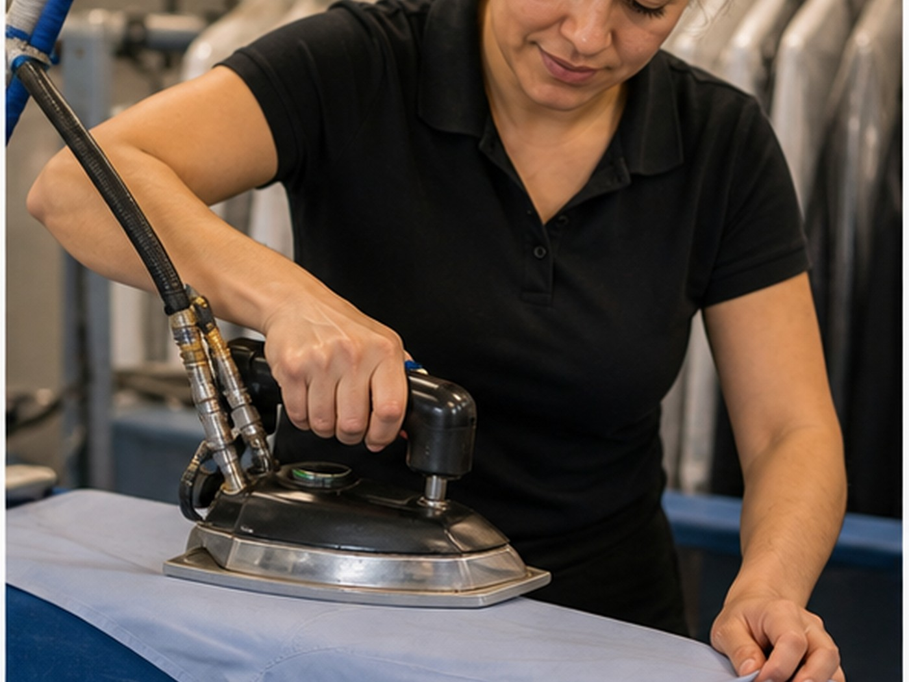
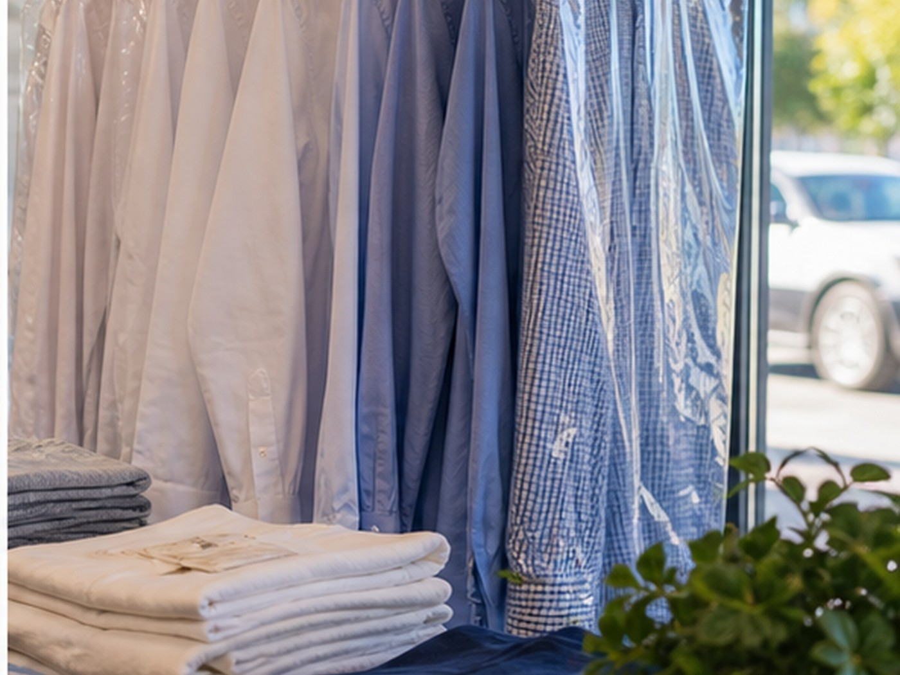

Local work
A cleaner digital counter for a trusted local cleaner.
Dry cleaning customers need hours, services, garment care confidence, and an easy phone path. This site makes the shop feel current without losing its neighborhood trust.
